rm(list = ls())
library(factoextra)
## Warning: package 'ggplot2' was built under R version 4.5.3
library(FactoMineR)
pca.res <- PCA(iris[,-5], graph = F, scale.unit = T) # 1行代码实现主成分分析
pca.res
## **Results for the Principal Component Analysis (PCA)**
## The analysis was performed on 150 individuals, described by 4 variables
## *The results are available in the following objects:
##
## name description
## 1 "$eig" "eigenvalues"
## 2 "$var" "results for the variables"
## 3 "$var$coord" "coord. for the variables"
## 4 "$var$cor" "correlations variables - dimensions"
## 5 "$var$cos2" "cos2 for the variables"
## 6 "$var$contrib" "contributions of the variables"
## 7 "$ind" "results for the individuals"
## 8 "$ind$coord" "coord. for the individuals"
## 9 "$ind$cos2" "cos2 for the individuals"
## 10 "$ind$contrib" "contributions of the individuals"
## 11 "$call" "summary statistics"
## 12 "$call$centre" "mean of the variables"
## 13 "$call$ecart.type" "standard error of the variables"
## 14 "$call$row.w" "weights for the individuals"
## 15 "$call$col.w" "weights for the variables"29 主成分分析可视化
之前给大家详细介绍了PCA的步骤以及结果的解读，但是对于可视化并没有详细说明，这是因为PCA的可视化方案非常多，这次专门给大家介绍PCA的可视化，可以配合上一篇一起观看。
PCA可视化的R包有很多，但是比较美观的主要是以下几个：
factoextra和factoMineRggbiplotggplot2
今天为大家一一介绍，并接再介绍几种3d版本的PCA可视化。
29.1 factoextra
使用R语言自带的iris鸢尾花数据进行演示。
结果信息丰富，一共有15个，可以通过不断的$获取，也可以通过特定函数提取，下面介绍。
29.1.1 特征值和方差贡献率
获取特征值、方差贡献率和累积方差贡献率：
get_eig(pca.res)
## eigenvalue variance.percent cumulative.variance.percent
## Dim.1 2.91849782 72.9624454 72.96245
## Dim.2 0.91403047 22.8507618 95.81321
## Dim.3 0.14675688 3.6689219 99.48213
## Dim.4 0.02071484 0.5178709 100.00000
# 或者
#pca.res$eig可视化方差贡献率（碎石图）：
fviz_eig(pca.res,addlabels = T,ylim=c(0,100))
## Warning in geom_bar(stat = "identity", fill = barfill, color = barcolor, :
## Ignoring empty aesthetic: `width`.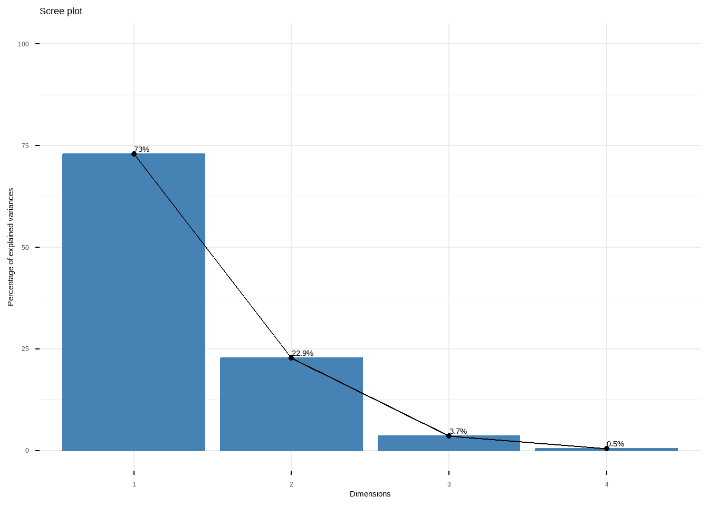
# 或者
# fviz_screeplot(pca.res,addlabels = T,ylim=c(0,100))29.1.2 变量结果
通过get_pca_var()函数或者pca.res$var可以获取变量结果，这部分结果告诉我们要分析的指标在主成分中表现如何。变量结果中主要包含4个部分的统计结果。
#res.var <- pca.res$var
# 或者
res.var <- get_pca_var(pca.res)
res.var # 4个部分的结果
## Principal Component Analysis Results for variables
## ===================================================
## Name Description
## 1 "$coord" "Coordinates for the variables"
## 2 "$cor" "Correlations between variables and dimensions"
## 3 "$cos2" "Cos2 for the variables"
## 4 "$contrib" "contributions of the variables"- “$coord”(Coordinates/坐标)：
- 含义：变量在主成分图上的坐标值，其实就是载荷 (Loadings) 或相关系数.
- 用途：数值越大（绝对值），说明该变量与该主成分的关系越密切。用于解释主成分的生物学含义（例如：PC1主要由哪几个变量决定）。
- “\(cor"(Correlations/相关性)：
- 含义：原始变量与主成分之间的相关系数。在scale.unit=TRUE（标准化）的情况下，它通常与"\)coord”数值相同或非常接近。
- 用途：用来判断变量与主成分的相关性强弱（-1到1之间）。
- “$cos2”(Cosine Squared/余弦平方)
- 含义：质量指标，表示主成分对该变量的代表程度（拟合优度），取值是0到1之间。
- 解读：
- cos2接近1：说明该变量被主成分很好地解释了（点在图上离原点远）。
- cos2接近0：说明该变量在这个主成分上没怎么体现（可能需要更多主成分来解释它，或者它在图上离原点很近）。
- “$contrib”(Contributions/贡献率)
- 含义：该变量对主成分形成的贡献百分比。
- 解读：所有变量对某一个主成分的贡献加起来是100%。
- 用途：找出谁是“主力军”。例如，如果“Sepal.Width”对PC2的贡献率是85%，说明PC2主要是由Sepal.Width驱动的。
# 每个结果都可以单独提取
res.var$coord
## Dim.1 Dim.2 Dim.3 Dim.4
## Sepal.Length 0.8901688 0.36082989 -0.27565767 -0.03760602
## Sepal.Width -0.4601427 0.88271627 0.09361987 0.01777631
## Petal.Length 0.9915552 0.02341519 0.05444699 0.11534978
## Petal.Width 0.9649790 0.06399985 0.24298265 -0.07535950
res.var$cor
## Dim.1 Dim.2 Dim.3 Dim.4
## Sepal.Length 0.8901688 0.36082989 -0.27565767 -0.03760602
## Sepal.Width -0.4601427 0.88271627 0.09361987 0.01777631
## Petal.Length 0.9915552 0.02341519 0.05444699 0.11534978
## Petal.Width 0.9649790 0.06399985 0.24298265 -0.07535950
res.var$cos2
## Dim.1 Dim.2 Dim.3 Dim.4
## Sepal.Length 0.7924004 0.130198208 0.075987149 0.0014142127
## Sepal.Width 0.2117313 0.779188012 0.008764681 0.0003159971
## Petal.Length 0.9831817 0.000548271 0.002964475 0.0133055723
## Petal.Width 0.9311844 0.004095980 0.059040571 0.0056790544
res.var$contrib
## Dim.1 Dim.2 Dim.3 Dim.4
## Sepal.Length 27.150969 14.24440565 51.777574 6.827052
## Sepal.Width 7.254804 85.24748749 5.972245 1.525463
## Petal.Length 33.687936 0.05998389 2.019990 64.232089
## Petal.Width 31.906291 0.44812296 40.230191 27.41539629.1.2.1 变量结果可视化
使用fviz_pca_var()对变量结果进行可视化，这个图被称为载荷图或者相关性圆：
fviz_pca_var(pca.res,col.var = "red",col.circle = "lightblue")+
scale_x_continuous(limits = c(-1,1.5))
## Warning: Using `size` aesthetic for lines was deprecated in ggplot2 3.4.0.
## ℹ Please use `linewidth` instead.
## ℹ The deprecated feature was likely used in the ggpubr package.
## Please report the issue at <https://github.com/kassambara/ggpubr/issues>.
## Warning: `aes_string()` was deprecated in ggplot2 3.0.0.
## ℹ Please use tidy evaluation idioms with `aes()`.
## ℹ See also `vignette("ggplot2-in-packages")` for more information.
## ℹ The deprecated feature was likely used in the factoextra package.
## Please report the issue at <https://github.com/kassambara/factoextra/issues>.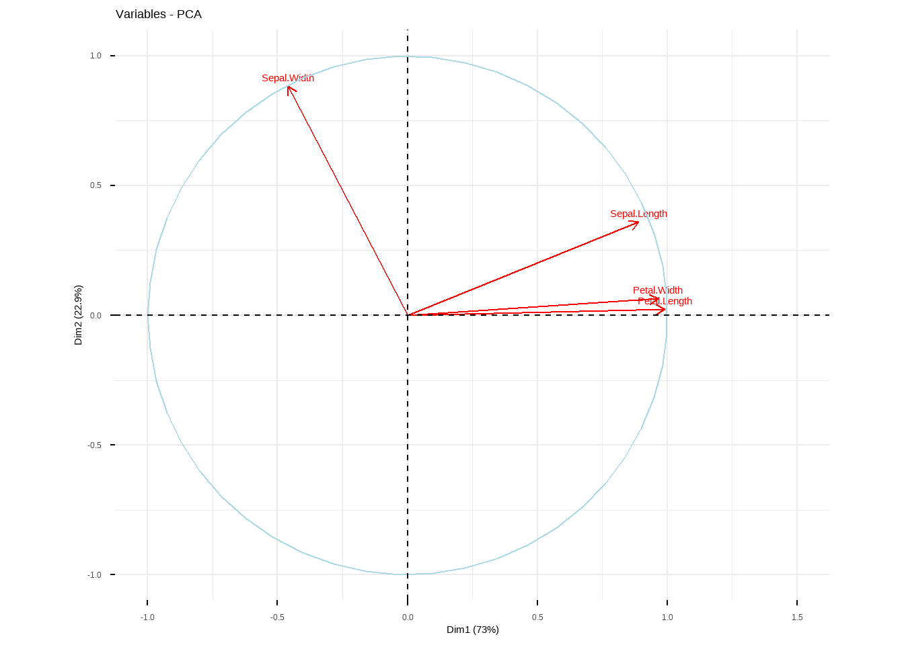
横轴表示第一主成分，通常解释了数据中最大的变异（73%），纵轴是第二主成分，解释了剩余变异中最大的一部分（22.9%）。
每个箭头代表一个原始变量，箭头的起点是圆心(0,0)，箭头的终点是该变量在主成分空间中的坐标（即载荷值），即res.var$coord的值，比如：Sepal.Width在Dim.1的坐标是-0.4601427，在Dim.2的坐标是0.88271627，根据这两个坐标就画出来Sepal.Width那根线了，以此类推。
线段越长，越接近圆周的边缘，说明该变量越能被PC1和PC2解释。如果线段很短，说明这两个主成分没能很好地解释该变量，该变量的信息主要隐藏在后面的主成分（PC3,PC4）里。
箭头的方向主要说明主成分和变量的相关关系：
- 指向右方 (PC1正半轴)：该变量与PC1呈正相关。PC1得分高的人，该指标数值也大。
- 指向左方 (PC1负半轴)：该变量与PC1呈负相关。
- 指向上方 (PC2正半轴)：该变量与PC2呈正相关。
- 指向下方 (PC2负半轴)：该变量与PC2呈负相关。
两条箭头之间的夹角说明两个变量之间的相关关系：
- 两条箭头之间的夹角小于90°，说明两个变量是正相关；
- 两条箭头之间的夹角大于90°，说明两个变量是负相关；
- 两条箭头之间的夹角等于90°，说明两个变量不相关；
- 两条箭头之间的夹角等于180°，说明两个变量完全负相关；
可以通过col.var="xxx"给变量按照不同指标大小上色：
# col.var可选："cos2","contrib", "coord", "x", "y"
fviz_pca_var(pca.res, col.var = "cos2",
# 可自定义设置颜色
gradient.cols = c("#00AFBB", "#E7B800", "#FC4E07"),
repel = TRUE # 防止标签重叠
)+
scale_x_continuous(limits = c(-1,1.5))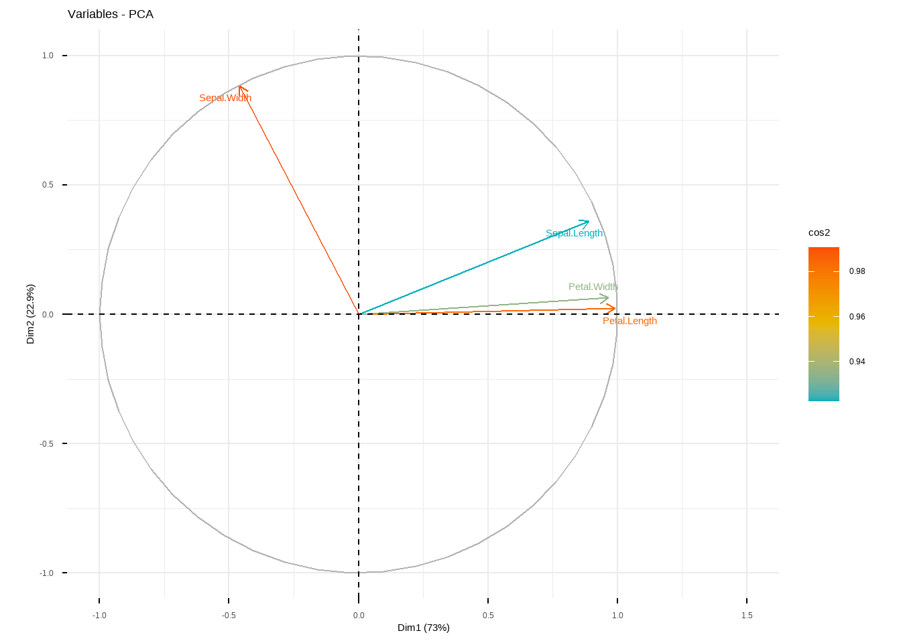
可以通过alpha.var="xxx"给变量颜色根据不同指标大小渐变：
# alpha.var可选：cos2","contrib", "coord", "x", "y"
fviz_pca_var(pca.res, alpha.var = "x",
repel = TRUE) + # 防止标签重叠
scale_x_continuous(limits = c(-1,1.5))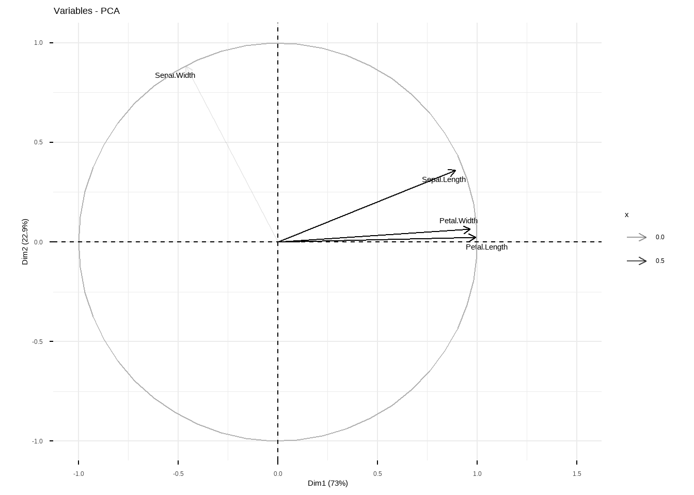
29.1.2.2 cos2
- “$cos2”(Cosine Squared/余弦平方)
- 含义：质量指标。表示主成分对该变量的代表程度（拟合优度），取值是0到1之间。
- 解读：
- cos2接近1：说明该变量被主成分很好地解释了（点在图上离原点远，位置可靠）。
- cos2接近0：说明该变量在这个主成分上没怎么体现（可能需要更多主成分来解释它，或者它在图上离原点很近）。
- 重要性：画图时非常重要，通常用颜色深浅表示cos2大小，cos2低的点参考价值低。
library("corrplot")
corrplot(res.var$cos2, is.corr = F)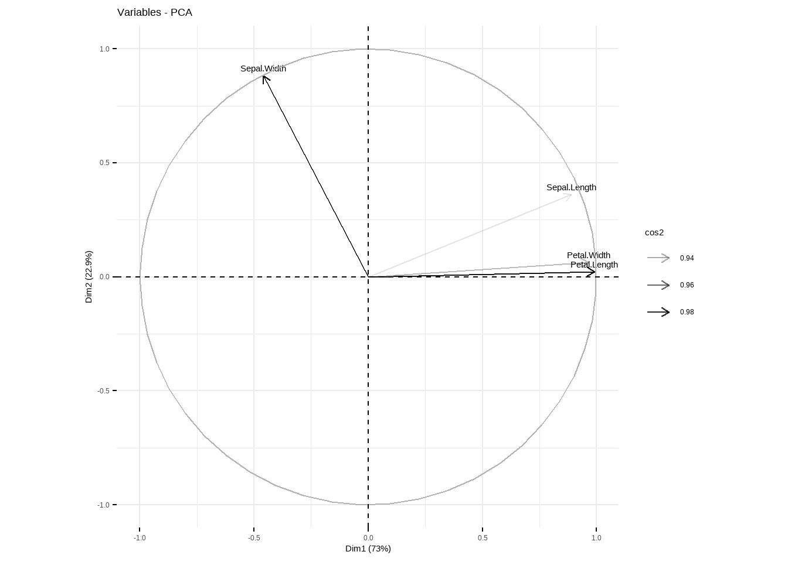
可以看到Petal.Length、Petal.Width和Dim1的相关性比较强，Sepal.Width和Dim2的相关性比较强。
通过fviz_cos2()查看变量在不同主成分的总和，以下是不同变量在第1和第2主成分的加和，如果把axes=1:2改成axes=1:4，就会变成都是1（这个数据最多4个主成分，同一变量的cos2在所有主成分的总和是1）。
fviz_cos2(pca.res, choice = "var", axes = 1:2)29.1.2.3 contrib
- “$contrib”(Contributions/贡献率)
- 含义：该变量对主成分形成的贡献百分比。
- 解读：所有变量对某一个主成分的贡献加起来是100%。
- 用途：找出谁是“主力军”。例如，如果“Sepal.Width”对PC2的贡献率是85%，说明PC2主要是由Sepal.Width驱动的。
首先也是可以通过画相关性图进行可视化，颜色越深说明变量对主成分的贡献越大：
library("corrplot")
corrplot(res.var$contrib, is.corr=FALSE) 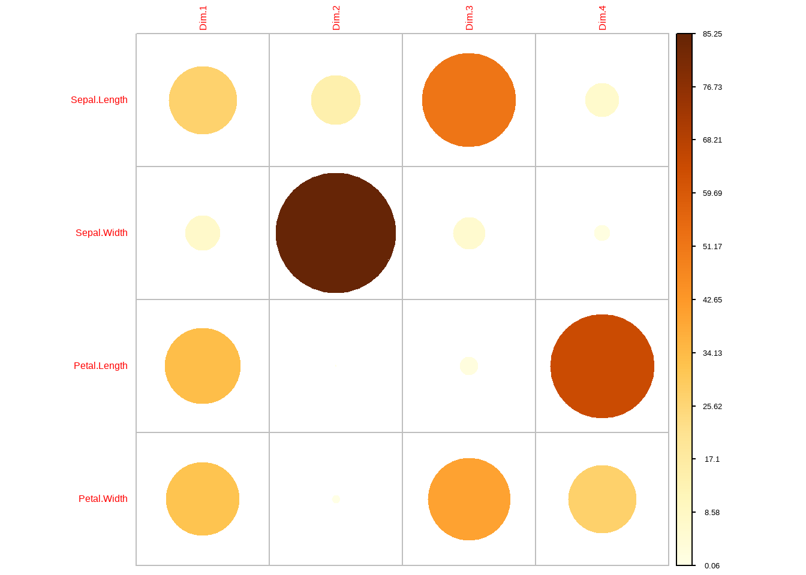
通过fviz_contrib()可视化不同变量对主成分的贡献：
# axes选择不同的主成分，这里选择第1主成分
fviz_contrib(pca.res, choice = "var", axes = 1)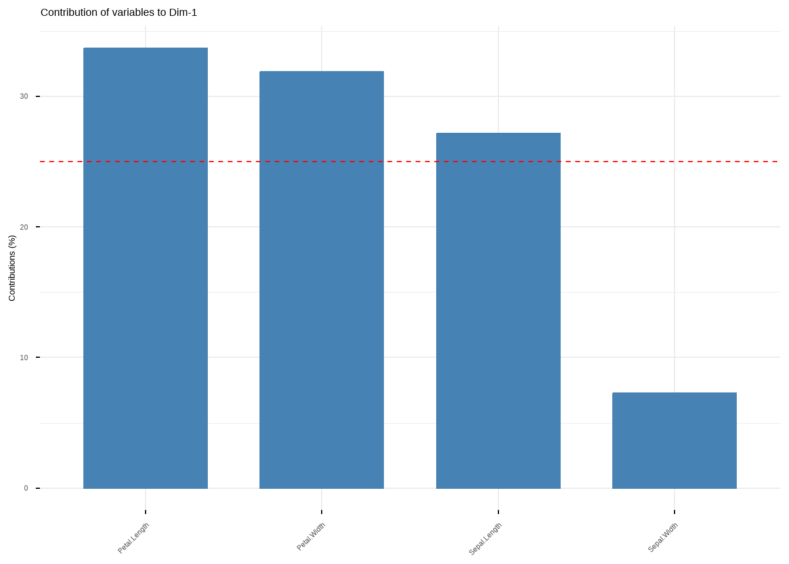
# 对第1和第2主成分的贡献
fviz_contrib(pca.res, choice = "var", axes = 1:2)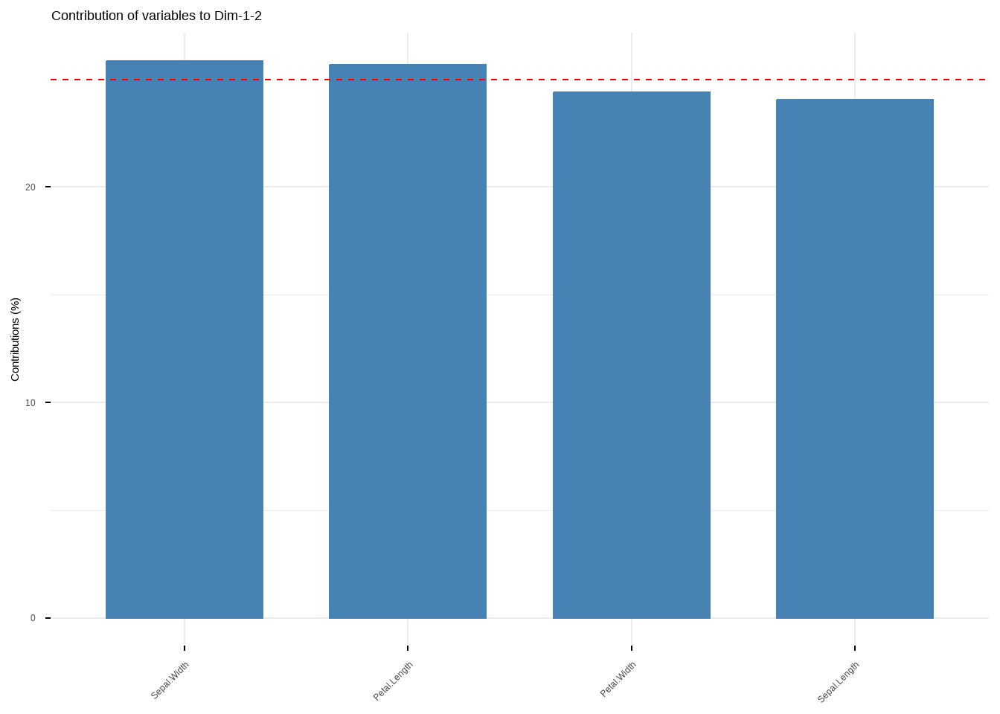
FactoMineR中的dimdesc()函数可以用来识别与给定主成分最显著相关的变量：
# 识别与PC1和PC2最相关的变量
res.desc <- dimdesc(pca.res, axes = c(1,2), proba = 0.05)
# 查看与PC1最相关的变量,给出相关系数和P值
res.desc$Dim.1 # Dim.2
##
## Link between the variable and the continuous variables (R-square)
## =================================================================================
## correlation p.value
## Petal.Length 0.9915552 3.369916e-133
## Petal.Width 0.9649790 6.609632e-88
## Sepal.Length 0.8901688 2.190813e-52
## Sepal.Width -0.4601427 3.139724e-0929.1.3 样本结果
使用get_pca_ind()或者pca.res$ind提取样本结果，这部分告诉我们每一个样本（每一朵鸢尾花）在主成分中的表现。
# 提取样本结果
res.ind <- get_pca_ind(pca.res)
res.ind
## Principal Component Analysis Results for individuals
## ===================================================
## Name Description
## 1 "$coord" "Coordinates for the individuals"
## 2 "$cos2" "Cos2 for the individuals"
## 3 "$contrib" "contributions of the individuals"- “$coord”(Coordinates/坐标)：样本在主成分图上的坐标值，也就是主成分得分 (PCA Scores)。
- “$cos2”(Cosine Squared/余弦平方)：
- 含义：主成分对该样本的代表程度。
- 解读：
- 如果某样本在PC1和PC2上的cos2之和很高（接近1），说明这个样本在前两个主成分构成的平面上投影位置很准确。
- 如果很低，说明这个样本的特征主要藏在后面的主成分里。
- “$contrib”(Contributions/贡献率)
- 含义：该样本对主成分形成的贡献百分比，可用来寻找异常值或典型样本。
- 如果某个样本对PC1的贡献率特别高（远超平均值），说明是这个样本“拉偏”了主成分的方向，它可能是一个极端的异常值，或者是最典型的代表。
每个结果也都是可以单独提取的：
# 以coord为例
head(res.ind$coord)
## Dim.1 Dim.2 Dim.3 Dim.4
## 1 -2.264703 0.4800266 -0.12770602 -0.02416820
## 2 -2.080961 -0.6741336 -0.23460885 -0.10300677
## 3 -2.364229 -0.3419080 0.04420148 -0.02837705
## 4 -2.299384 -0.5973945 0.09129011 0.06595556
## 5 -2.389842 0.6468354 0.01573820 0.03592281
## 6 -2.075631 1.4891775 0.02696829 -0.0066081829.1.3.1 样本结果可视化
样本的结果可视化可能是更常见的PCA图形，通过fviz_pca_ind()实现：
fviz_pca_ind(pca.res)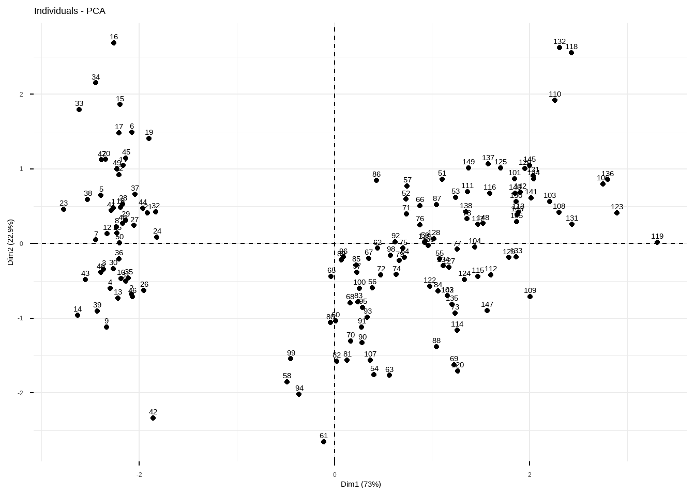
这个图是通过res.ind$coord里面的坐标实现的，其实就是不同样本在不同主成分的上面的得分score。
默认的可视化比较简陋，但是可以通过超多参数实现各种精细化的控制，比如把不同的属性映射给点的大小和颜色，实现各种花里胡哨的效果。
比如通过组别上色，就是大家最常见的PCA可视化图形：
# 经典图形，是不是很熟悉？
fviz_pca_ind(pca.res,
geom.ind = "point", # 只显示点，不要文字
col.ind = iris$Species, # 按照组别上色
# 自己提供颜色，或者使用主题
palette = c("#00AFBB", "#E7B800", "#FC4E07"),
addEllipses = TRUE, # 添加置信椭圆
legend.title = "Groups"
)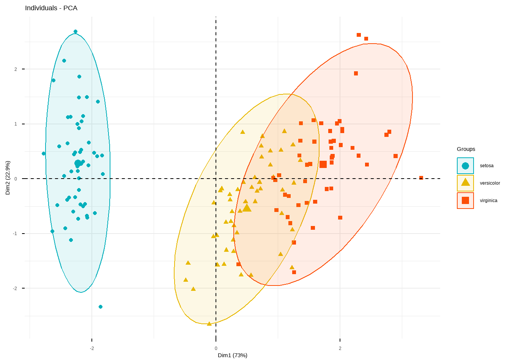
通过给col.ind参数提供不同的值，可以修改点的颜色，用法与col.var完全一致。
# col.ind可选："cos2","contrib", "coord", "x", "y"
fviz_pca_ind(pca.res,
col.ind = "cos2",
# 可自定义设置颜色
gradient.cols = c("#00AFBB", "#E7B800", "#FC4E07"),
repel = TRUE # 防止标签重叠
)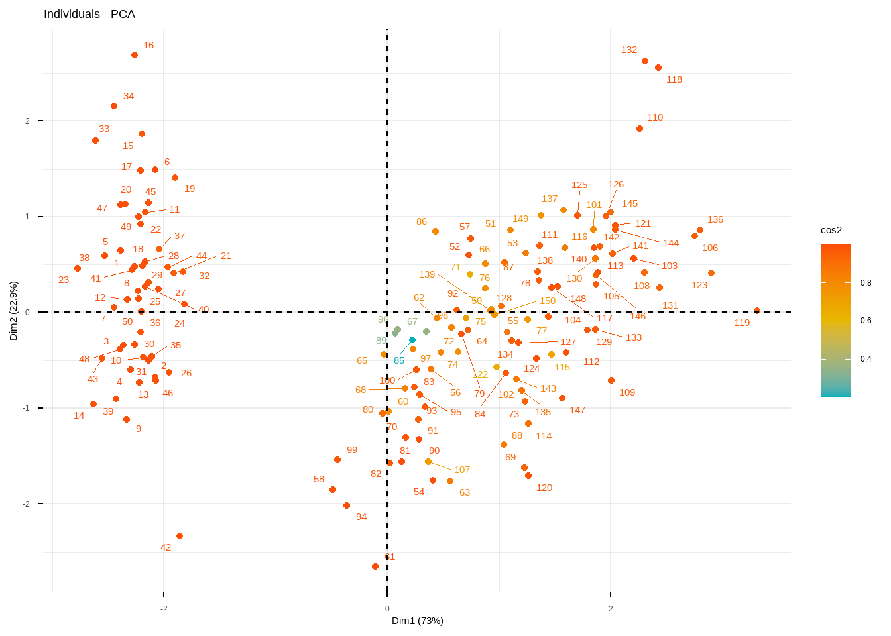
可以更改点的大小、颜色等，只要设置合适的参数即可：
fviz_pca_ind(pca.res,
pointsize = "cos2",
pointshape = 21, # 设置点的大小
fill = "#E7B800", # 填充色
repel = TRUE
)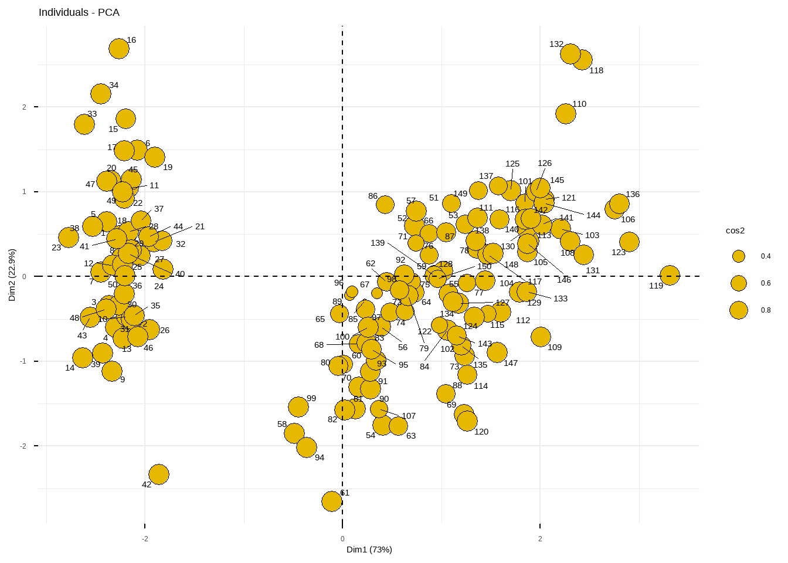
同时更改点的大小和颜色当然也是支持的：
fviz_pca_ind(pca.res,
col.ind = "cos2",
pointsize = "contrib", # 控制大小
gradient.cols = c("#00AFBB", "#E7B800", "#FC4E07"),
repel = TRUE
)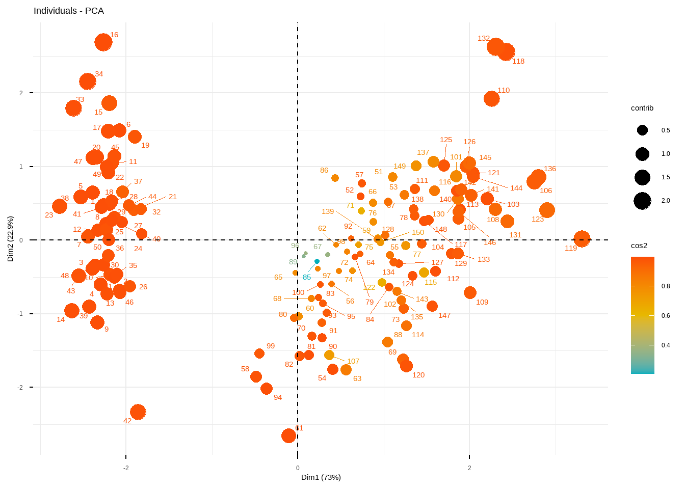
29.1.3.2 cos2
使用参数choice="ind"可视化样本对不同主成分的cos2：
# axes选择主成分
fviz_cos2(pca.res, choice = "ind", axes = 1:2)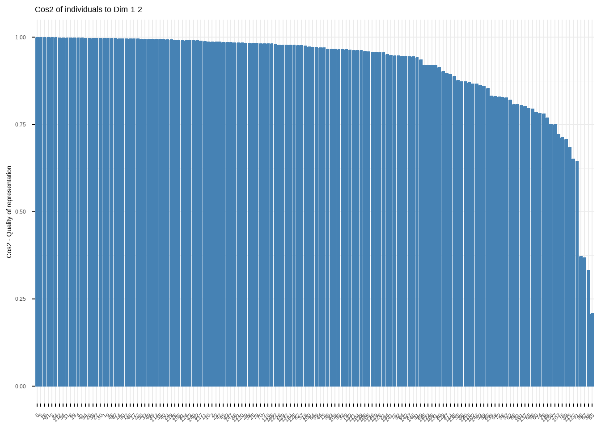
29.1.3.3 contrib
和变量对主成分的贡献可视化非常类似，选择choice="ind"即可：
fviz_contrib(pca.res, choice = "ind", axes = 1:2)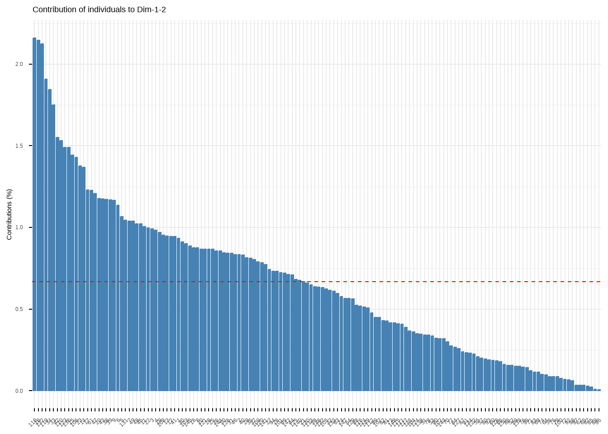
29.1.4 biplot
双标图…
同时展示变量和样本和主成分的关系，超级多的自定义可视化细节。
# 同时有箭头和椭圆
fviz_pca_biplot(pca.res,
col.ind = iris$Species,
palette = "jco",
addEllipses = TRUE,
label = "var",
col.var = "black",
repel = TRUE,
legend.title = "Species"
) 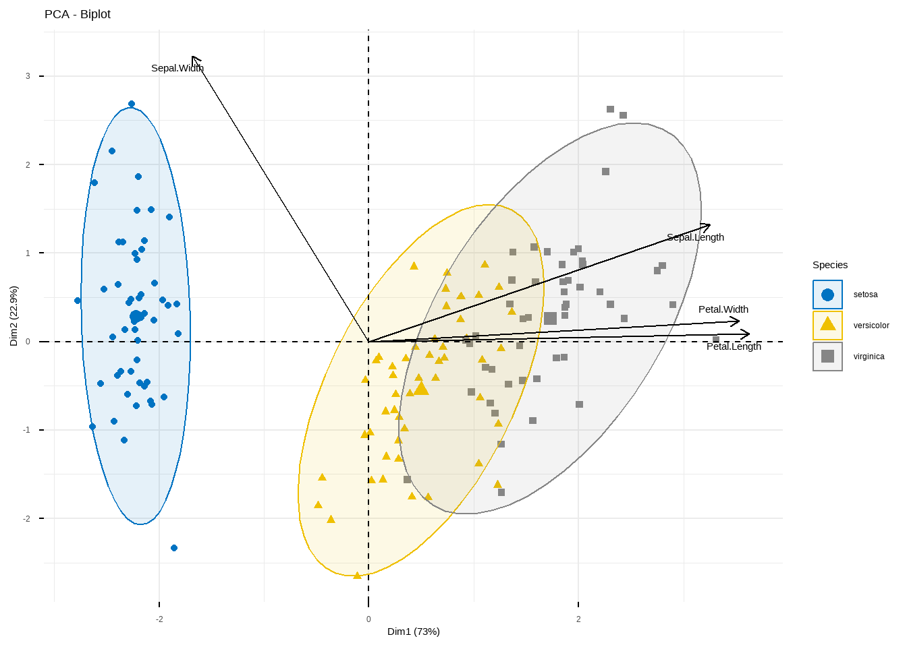
fviz_pca_biplot(pca.res,
# 组别映射给点的填充色
geom.ind = "point",
pointshape = 21,
pointsize = 2.5,
fill.ind = iris$Species,
col.ind = "black",
# 通过自定义分组给变量上色
col.var = factor(c("sepal", "sepal", "petal", "petal")),
# 自定义图例标题
legend.title = list(fill = "Species", color = "Clusters"),
repel = TRUE
)+
ggpubr::fill_palette("jco")+ # 选择点的填充色的配色
ggpubr::color_palette("npg") # 选择变量颜色的配色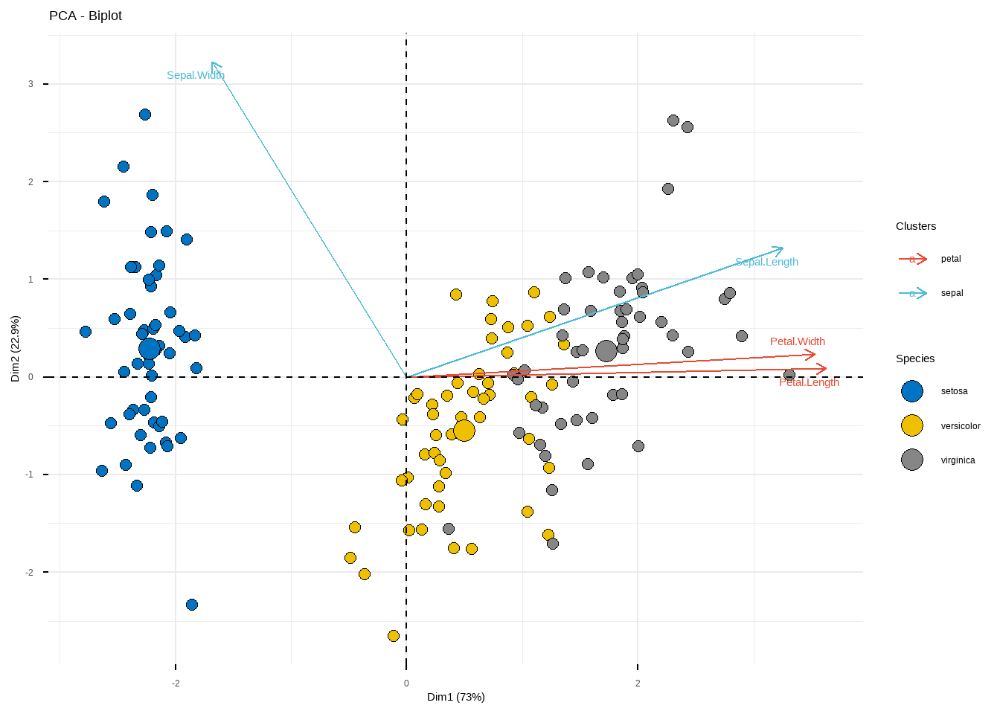
fviz_pca_biplot(pca.res,
# 自定义样本部分
geom.ind = "point",
fill.ind = iris$Species, # 填充色
col.ind = "black", # 边框色
pointshape = 21, # 点的形状
pointsize = 2,
palette = "jco",
addEllipses = TRUE,
# 自定义变量部分
alpha.var ="contrib", col.var = "contrib",
gradient.cols = "RdYlBu",
# 自定义图例标题
legend.title = list(fill = "Species", color = "Contrib",
alpha = "Contrib")
)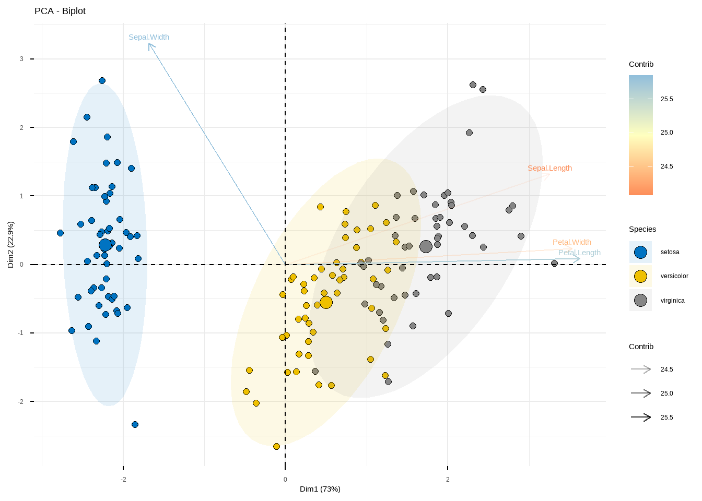
fviz_xxx系列可视化函数底层是ggscatter的封装，这个函数来自ggpubr包，所有ggpubr支持的特性都可以给fviz_xxx函数使用，这也是这几个函数功能强大的原因，毕竟底层都是ggplot2!
参考资料：factoextra和factoMineR的官方文档
29.2 ggplot2
介绍下如何提取数据用ggplot2画PCA图。还是使用鸢尾花数据集。
rm(list = ls())
pca.res <- prcomp(iris[,-5], scale. = T, center = T)
pca.res
## Standard deviations (1, .., p=4):
## [1] 1.7083611 0.9560494 0.3830886 0.1439265
##
## Rotation (n x k) = (4 x 4):
## PC1 PC2 PC3 PC4
## Sepal.Length 0.5210659 -0.37741762 0.7195664 0.2612863
## Sepal.Width -0.2693474 -0.92329566 -0.2443818 -0.1235096
## Petal.Length 0.5804131 -0.02449161 -0.1421264 -0.8014492
## Petal.Width 0.5648565 -0.06694199 -0.6342727 0.5235971在上一篇中提到过，经典的PCA图的横纵坐标其实就是不同样本在不同主成分中的得分，只要提取出来就可以用ggplot2画了。
# 提取得分
tmp <- as.data.frame(pca.res$x)
head(tmp)
## PC1 PC2 PC3 PC4
## 1 -2.257141 -0.4784238 0.12727962 0.024087508
## 2 -2.074013 0.6718827 0.23382552 0.102662845
## 3 -2.356335 0.3407664 -0.04405390 0.028282305
## 4 -2.291707 0.5953999 -0.09098530 -0.065735340
## 5 -2.381863 -0.6446757 -0.01568565 -0.035802870
## 6 -2.068701 -1.4842053 -0.02687825 0.006586116和原数据拼到一起就可以画图了：
tmp$species <- iris$Species
head(tmp)
## PC1 PC2 PC3 PC4 species
## 1 -2.257141 -0.4784238 0.12727962 0.024087508 setosa
## 2 -2.074013 0.6718827 0.23382552 0.102662845 setosa
## 3 -2.356335 0.3407664 -0.04405390 0.028282305 setosa
## 4 -2.291707 0.5953999 -0.09098530 -0.065735340 setosa
## 5 -2.381863 -0.6446757 -0.01568565 -0.035802870 setosa
## 6 -2.068701 -1.4842053 -0.02687825 0.006586116 setosalibrary(ggplot2)
library(ggsci)
ggplot(tmp, aes(PC1, PC2))+
geom_point(aes(color = species))+
stat_ellipse(aes(fill=species), alpha = 0.2,
geom ="polygon",type = "norm")+
scale_fill_aaas()+
scale_color_aaas()+
theme_bw()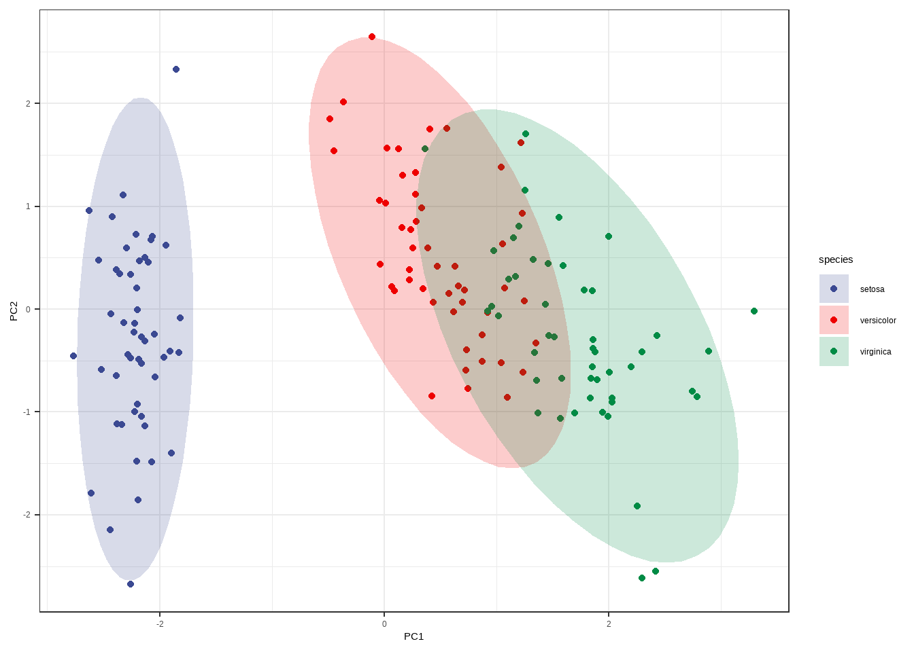
29.3 3d版
其实就是使用3个主成分，之前介绍过一种：使用R语言美化PCA图，使用方法非常简单，也是在文献中学习到的。
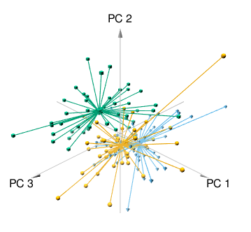
今天再介绍下scatterplot3d包。
library(scatterplot3d)
scatterplot3d(tmp[,1:3], # 第1-3主成分
# 颜色长度要和样本长度一样，且对应！
color = rep(c("#00AFBB", "#E7B800", "#FC4E07"),each=50),
pch = 15,
lty.hide = 2
)
legend("topleft",c('Setosa','Versicolor','Virginica'),
fill=c("#00AFBB", "#E7B800", "#FC4E07"),box.col=NA)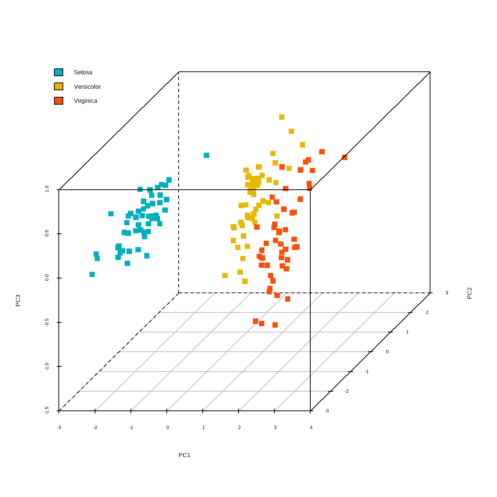